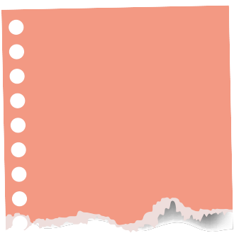
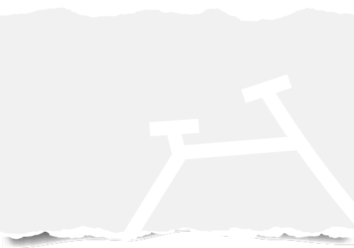

Wist je dat er in Nederland jaarlijks 1 miljoen fietsen worden weggegooid? Dit is natuurlijk zonde, want een fiets kan nog prima een tweede leven hebben.

Dus, waarom zou je je oude fiets niet een tweede kans geven? Door te kiezen voor fietsrecycling draag je bij aan een duurzamere toekomst en geef je afgedankte fietsen de mogelijkheid om nieuwe verhalen te beginnen.